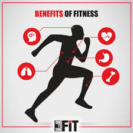

Matters
MattersHealth concerns:
Sleep
Sleep plays an important role in your physical health. For example, sleep is involved in healing and repair of your heart and blood vessels. Ongoing sleep deficiency is linked to an increased risk of heart disease, kidney disease, high blood pressure, diabetes, and stroke
Stress
Not all stress is bad. But long-term stress can lead to health problems.
Preventing and managing long-term stress can lower your risk for other conditions like heart disease, obesity, high blood pressure, and depression.
You can prevent or reduce stress by:

Stress is hard to avoid. You can find ways to manage stress by:
Mental health
Mental health includes our emotional, psychological, and social well-being. It affects how we think, feel, and act. It also helps determine how we handle stress, relate to others, and make choices. Mental health is important at every stage of life, from childhood and adolescence through adulthood.
Over the course of your life, if you experience mental health problems, your thinking, mood, and behavior could be affected. Many factors contribute to mental health problems, including:

Early Warning Signs of mental health
Not sure if you or someone you know is living with mental health problems? Experiencing one or more of the following feelings or behaviors can be an early warning sign of a problem:

Fitness
Importance 
To put it simply, physical activity and exercise is important for everyone. Children, adolescents, and adults of all ages need regular physical activity. Physical activity promotes good health, and you should stay active throughout all stages of your life regardless of your body type or BMI.
Understanding the benefits of physical fitness and knowing how active you should be can help you maintain good health and improve your overall quality of life. Here are a few benefits of regular physical activity that demonstrate the importance of physical fitness.
Save money
According to the Centers for Disease Control and Prevention, chronic diseases cause 7 out of 10 deaths in the U.S., and treating chronic diseases accounts for 86% of U.S. healthcare costs. While some diseases cannot be prevented, you can reduce your risk for certain disease – such as heart disease and diabetes – through reducing risky behaviors and living a healthy lifestyle.
Making healthy choices, such as engaging in regular physical activity, can reduce your risk for many health issues and complications that can result in expensive medical care.
*General Questions*
1.What are three reasons that sleep is so important?
2.Why stress is bad for health?
If you're constantly under stress, you can have physical symptoms, such as headaches, an upset stomach, high blood pressure, chest pain, and problems with sex and sleep. Stress can also lead to emotional problems, depression, panic attacks, or other forms of anxiety and worry.When stress becomes overwhelming and prolonged, the risks for mental health problems and medical problems increase. Long-term stress increases the risk of mental health problems such as anxiety and depression, substance use problems, sleep problems, pain and bodily complaints such as muscle tension.
3.What are five signs of mental health
4.What is meaning of fitness and 5 levels of fitness?
Fitness means the condition of being physically and mentally fit with good health. It is the ability to carry out daily tasks with vigor and alertness, without undue fatigue, and with ample energy to enjoy life
Click Here For Skin Concerns